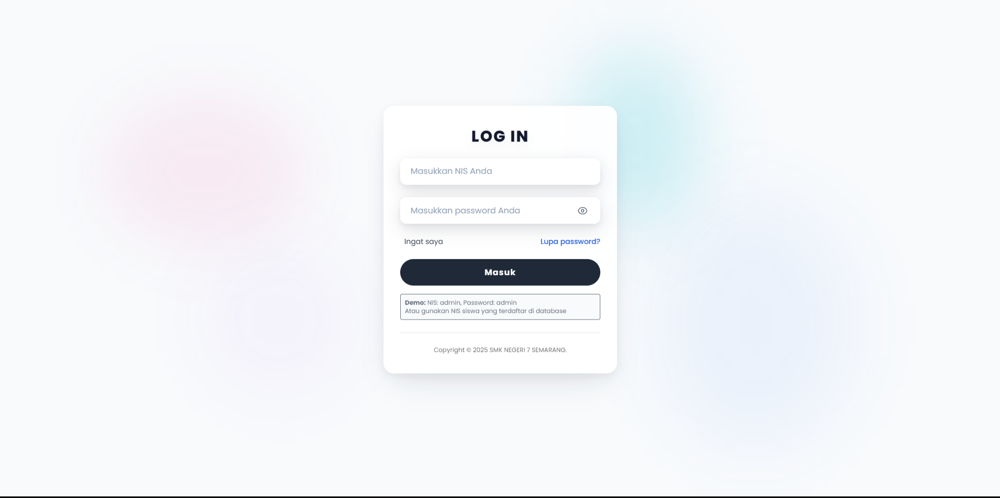
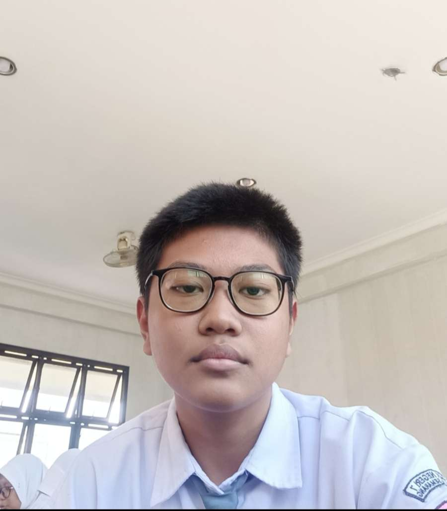
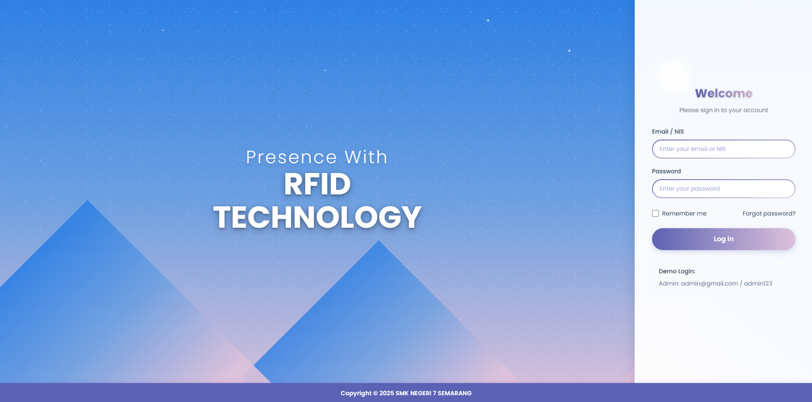
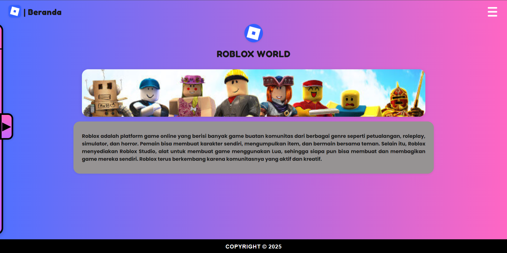

Student Attendance Website
- A dynamic website used by students to perform attendance.
- https://web-siswa-ten.vercel.app/

I'm a SIJA student who is really curious about the world of networking and cybersecurity. I like to explore how systems work, how networks are built, and how to keep them secure. I'm currently focusing on developing my skills through hands-on practice and learning new things in the field of IT.
Let's Get to Know Each Other
I come from a family that has always supported my education and personal development. I am an only child in my family, which has made me accustomed to being a self-reliant and responsible person. My family environment is one of the motivations for me to continue learning, growing, and pursuing my dreams in the field of information technology.
My Skills
Main Focus
I have a strong interest in the world of computer networking, from basic configuration, device management, to troubleshooting connections. I enjoy learning how a network can function stably, securely, and efficiently in supporting modern technology needs.
Main Focus
I also focus on studying various aspects of cybersecurity to understand how to protect systems and networks from digital threats. For me, security is an important part of the IT world because maintaining data and systems safe is the main responsibility in the digital age.
Works / Projects



My Documents